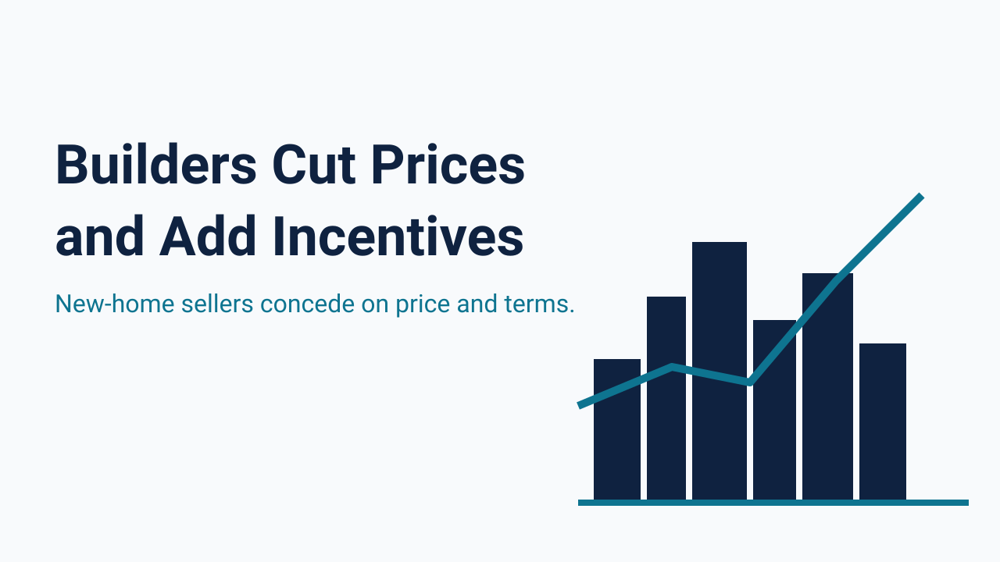
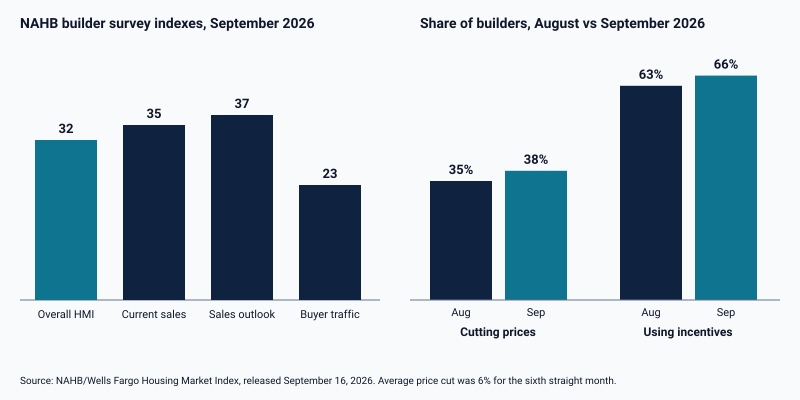

38% of Builders Cut Prices by an Average of 6% as 66% Use Incentives and Mortgage Rates Hold at 7.40%

New-home builders are competing harder for a shrinking pool of buyers, and their own survey data says so. The NAHB/Wells Fargo Housing Market Index fell 3 points to 32 in September 2026, matching its September 2025 reading as the lowest level in more than three years, according to NAHB's release of September 16. Current sales conditions slipped 4 points to 35, sales expectations fell 6 points to 37, and prospective buyer traffic was unchanged at 23. NAHB's chairman said traffic weakened largely because of rising mortgage rates.
Concessions are widening. In September, 38% of builders reported cutting prices, up from 35% in August, and the average reduction was 6%, unchanged for the sixth consecutive month. Sixty-six percent of builders used sales incentives, up from 63% in August and the highest share since December. Regional sentiment varied: the three-month average index was 44 in the Midwest, 39 in the Northeast, 31 in the South, and 28 in the West, according to NAHB.

The financing backdrop explains much of the pressure. Freddie Mac reported on October 15, 2026 that the 30-year fixed-rate mortgage averaged 7.40%, unchanged from the prior week and up from 6.27% a year earlier. The 15-year rate averaged 6.71%, compared with 5.52% a year ago. Builders also face rising costs: NAHB cited higher material prices, rising gas and diesel prices, and persistent labor shortages, and its chief economist reported that 42% of builders rated current lot availability as poor and 38% as fair. Weak demand and higher costs together may limit how far builders can cut, and many are pairing price reductions with incentives.
For investors, builder behavior matters in three ways. New-construction concessions compete directly with resale inventory in the same price band, they can set the market for comparable sales in a subdivision, and they change what a buyer actually pays relative to the recorded contract price. A purchase at a nominal price with a large seller-paid credit is not the same transaction as a purchase at a lower net price, and lenders may review seller concessions when they set the loan amount. Buyers should confirm the treatment with the lender before relying on a credit.
The survey does not describe a collapse. An average price cut of 6% that has held for six months suggests builders are adjusting methodically, and the rise in the share using incentives indicates they prefer to protect headline prices where they can. Readers should note that the NAHB data are survey-based sentiment measures, and that the next release will show whether the share of builders cutting prices continues to rise as long-term rates stay near 7.4%.